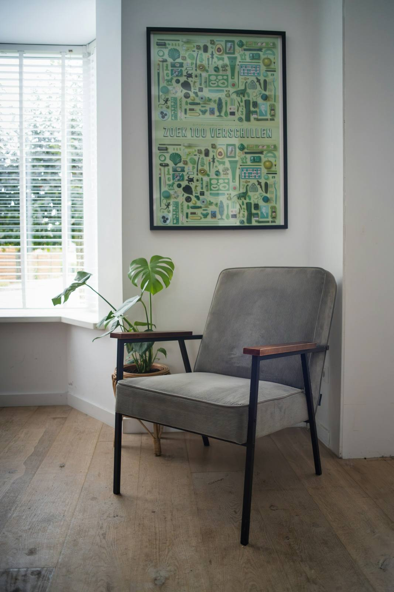

Hard seasons can feel lonely. You don't have to sort them out alone.
Maybe you and your partner keep landing in the same argument and walking away feeling more like roommates. Maybe something from years ago still shows up in your body, your sleep or your patience, and you feel like you should be over it by now.
It can be scary to come in and tell a stranger the things we spend a lot of time trying to forget. I'm not here to judge anyone's experiences or choices. I'm here to listen and help you work through whatever brought you in, at a pace that feels safe.
When every talk turns into the same fight
Couples therapy using the Gottman Method. We look at what happens when the two of you argue, not just what you argue about, and work on connection and on talking so you both feel heard. For couples rebuilding trust after an affair, too.
Couples therapy →When you feel on edge, or numb, and can't say why
Trauma therapy, including EMDR. EMDR uses bilateral stimulation to help you process memories that still feel stuck, and look again at the beliefs that formed around them.
Trauma therapy and EMDR →A little about me.
Choosing a therapist is personal. The free 15-minute call is an easy way to hear how I talk and see whether we might be a good fit.
I love helping people through difficult times. We've all had them, and they can feel isolating. A little guidance can go a long way.
Licensed Clinical Social Worker in Tennessee · Completed Level 1 training in Gottman Method Couples Therapy and Gottman Institute training in Treating Affairs and Trauma · EMDR-trained (completed EMDRIA-approved EMDR training)
More about JamieGetting started takes one short call.
A free 15-minute consult
A short phone call to talk about what's going on and see if we're a good fit. No cost and no pressure.
Your first sessions
For couples, we talk about how you met, your history together and apart, and your health history. This takes 2 to 3 sessions so the plan fits you both.
A plan we agree on
We set goals together and check them along the way to make sure they still match what you came in for.
Weekly sessions at my Murfreesboro office in Rutherford County on Tuesdays, or by video on Wednesdays from anywhere in Tennessee.
I'm not here to judge. I'm here to listen, and to help you work through whatever brought you in.

Intensives: more time in one sitting.
Some couples and individuals would rather work in a focused 3-hour block than wait a week between sessions. An intensive has one clear goal, set together before we start, with breaks built in. Intensives are in person at my Murfreesboro office.
We talk first to see if an intensive fits what you need. Weekly sessions are always an option too.
How intensives workWho I see
- Couples, married or not, who feel stuck or disconnected
- Couples rebuilding trust after an affair
- Adults 18 and up working through trauma or hard memories
- Anyone physically in Tennessee, in person or by video
When I'll point you elsewhere
- Children and teens under 18
- People outside Tennessee
- Crisis or emergency care. Call or text 988, or call 911
If I'm not the right fit, I'm glad to share names of colleagues who are.
Private pay, with superbills available if you'd like to use out-of-network benefits. Fees are posted, and you'll get a Good Faith Estimate in writing before your first session.
Good to know
I work during the day. How would this fit?
Video sessions work from anywhere private in Tennessee, including a long lunch break or a parked car (never while driving). Many people tell their employer it's a medical appointment, which it is.
Do you take insurance?
Not yet. Sessions are private pay. I can give you a superbill if you want to ask your plan about out-of-network benefits. Please call your plan to ask what they cover.
How does telehealth work?
You need to be physically in Tennessee during the session. We both join by video from a private space so we can really talk, and cameras stay on for the whole session.
What happens in the free consult?
It's a 15-minute phone call. You share a little about what's going on, ask any questions, and we decide together whether to book a first session.
What if I need help right now?
This office isn't a crisis service and messages aren't watched around the clock. If you're in crisis, call or text 988, or call 911 in an emergency.

Start with a free 15-minute consult.
Call or text (615) 200-0063 or email jamie@stonesrivertherapy.com. Texts are for scheduling. Please don't text health details. We'll talk about that on the phone. I return calls and messages within 1 business day.
Book a free consult